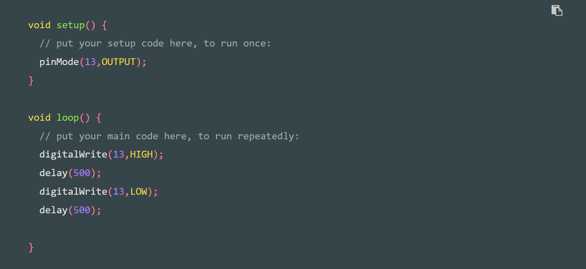
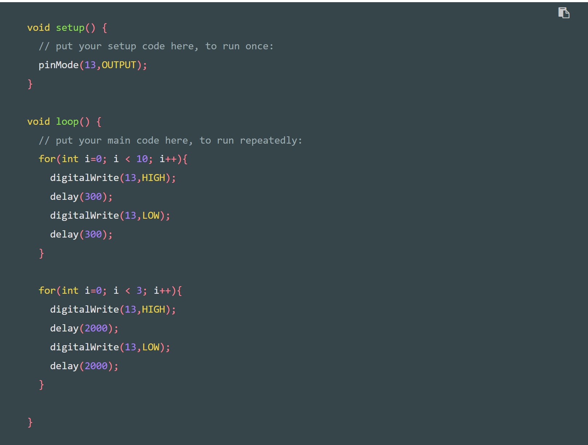
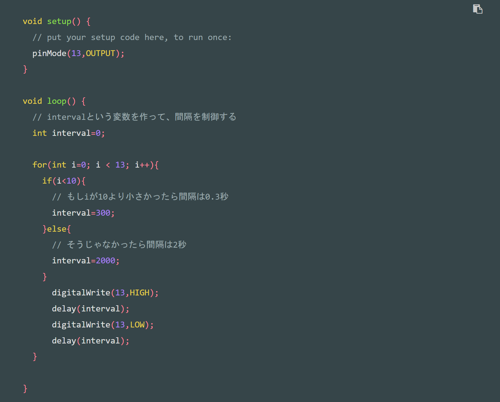
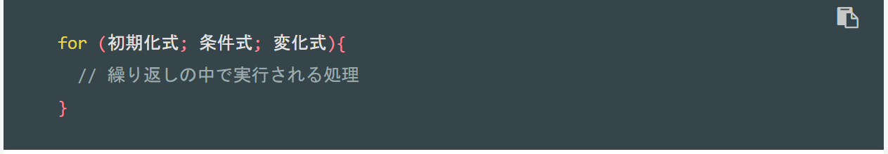
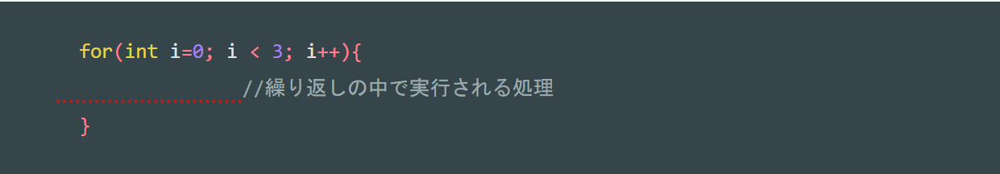
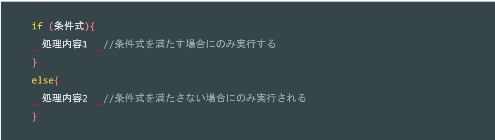

・マイコンボード：
Arduino UNO
Arduinoとは
Arduinoとは入出力ポートがあるマイコンボードです。
プログラムを書いて、センサーの値を読み込んだり、モーターを動かしたり、LEDを光らせたりと電子工作といわれることが簡単にできます。
基本設定
設定１：ボードの設定（［ツール］→［ボード］→［Arduino UNO］
設定２：シリアルポートの設定（［ツール］→［シリアルポート］→COM（数字））
Lチカ
・LチカとはLEDをちかちかさせること。
・使うLED：
LED
・LEDの詳細：LEDは長い方が＋、短い方がーである。＋はアノード、ーはカソードという。
Lチカのプログラム

For文のプログラム
このプログラムは0.3秒ごとの点滅を10回繰り返し、その後２秒ごとの点滅を３回繰り返す、というプログラム。
最後まで行ったら、また0.3秒の繰り返しに戻る。

IF文のプログラム
このプログラムは条件分岐ができる

■ポイント１：setupとloop
setupは最初に一回だけ実行されるプログラム
loopはずっと繰り返し実行されるプログラム
(~)の間がそれぞれのプログラムになる
■ポイント２：約束事（文の最後はセミコロン）
Arduinoでは基本的に命令文の最後には;(セミコロン)をつける。
※ただし、ifやforのように{}でくくるループや条件分岐の場合は除く。
■ポイント３：ピンの設定と出力
デジタルピン（1〜13）の設定
・pinMode：指定したピンを入力用に使うのか、出力用に使うのかを設定
例）今回はLEDを点灯させるために13番ピンから電気を流したい（出力したい）時・・・[pinMode(13,OUTPUT);]
・digitalWrite：デジタルピンの出力をLOWかHIGHで設定
LOW→0V
HIGH→5V
が出力される。
つまり、
digitalWrite(HIGH)でLEDがつく
digitalWrite(LOW)でLEDが消える
■ポイント４：delayで待つ
delay:指定した時間待つ命令
単位:ミリ秒(ms)
例)
delay(1000)→1秒待つ (1000/1000=1)
delay(100)→0.1秒待つ(100/1000=0.1)
delay(10)→0.01秒待つ(10/1000=0.01)
■ポイント５：For文


この式は
・iという変数で繰り返しを判断する
・iは0から始まる
・iが３未満の間は繰り返す（0から始まるので、３回の繰り返しになることに注意）
・i++はiが１ずつ足される
■ポイント６：IF文

正の感情
・嬉しい：サッカーの試合で勝った時
・幸せ：夕暮れ時の土手にいる時
負の感情
・悲しい：大切なものが無くなった時
デザイン演習Ⅰ・Ⅱトップページ
XBPトップページ